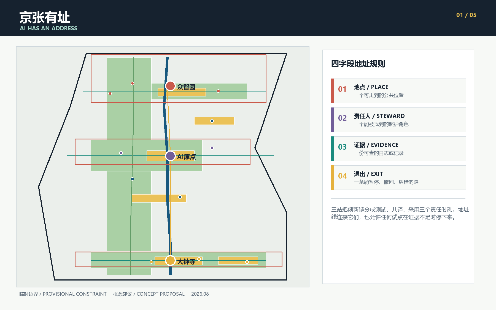
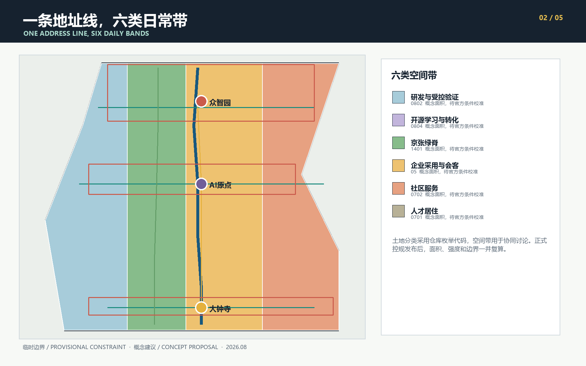
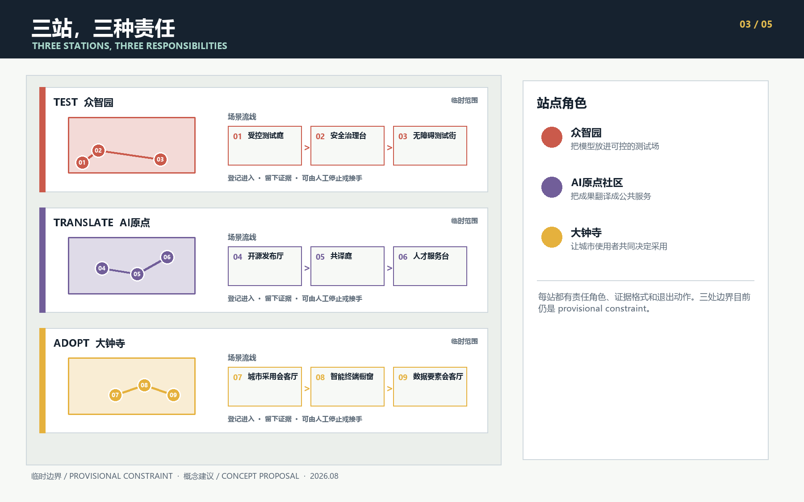
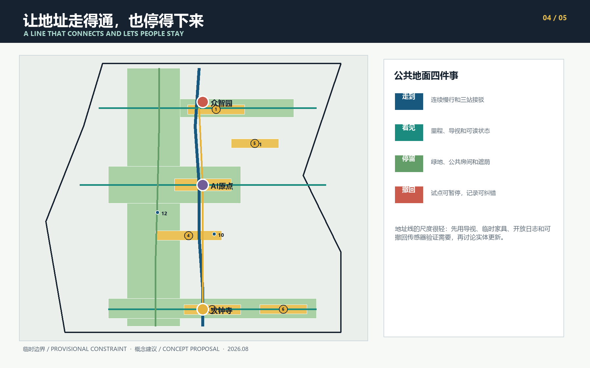

01
受控测试庭
众智园
模型红队与无障碍测试
把 AI 服务放回城市日常：一条地址线、三座责任站，以及每次试点都能被找到的证据和出口。
空间设计先回答“在哪里”，再回答“谁负责、拿什么证明、何时退出”。这套规则贯穿三层范围和十二张场景卡。

测试、共译和采用在同一条创新链上承担不同责任，三座站各有相应的空间安排和启用门槛。
众智园
模型红队与无障碍测试
AI原点
成果版本与公共翻译
大钟寺
居民评议与采用复盘
统筹研究范围约43.6平方公里，总体设计范围约11.4平方公里，重点区域约368.4公顷。图层采用 provisional constraint，不能替代正式红线。六类用地和十二处建筑包络只表达概念功能。



12张场景卡全部写明地点、责任、证据与出口；01至03为产业测试验证场景。
| # | 场景 | 站点 | 证据 / 出口 |
|---|---|---|---|
| 01 | 受控测试庭 | 众智园 | 测试日志 / 暂停测试 |
| 02 | 安全治理台 | 众智园 | 红队摘要 / 关闭沙盒 |
| 03 | 无障碍测试街 | 众智园 | 走查审计 / 撤除传感器 |
| 04 | 开源发布厅 | AI原点 | 发布账本 / 撤回活动权限 |
| 05 | 共译庭 | AI原点 | 版本记录 / 归档纠错 |
| 06 | 人才服务台 | AI原点 | 官方目录 / 转交人工窗口 |
| 07 | 城市采用会客厅 | 大钟寺 | 公开试用记录 / 结束试用 |
| 08 | 智能终端橱窗 | 大钟寺 | 授权日志 / 撤下展示 |
| 09 | 数据要素会客厅 | 大钟寺 | 授权登记 / 撤回数据集 |
| 10 | 京张记忆站 | 主线 | 引文卡 / 纠错退役 |
| 11 | 低碳算力庭 | 主线 | 能耗日志 / 关机 |
| 12 | 夜间公共维修点 | 主线 | 维护工单 / 撤除组件 |
自检状态：确定性校验、空间复核、视觉检查和专业证据检查均须在最终提交前运行。临时边界与重点区只产生 minor 提示，官方 polygon 到位后整包复算。
十个更新项目采用证据门槛推进。任务覆盖包括公告1.3至1.5、三层范围、三处重点区和agent.1至agent.6；完整映射保存在compliance_matrix.json。
公告与任务书确定目标和交付深度；仓库临时几何只用于概念生成；七个城市案例只提供机制启发。边界偏移风险记录在 ISSUE-846，控规、权属、道路、文保和市政条件列在 assumptions.json。